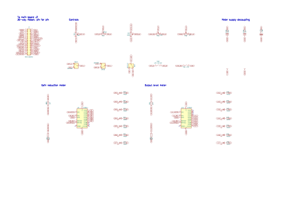
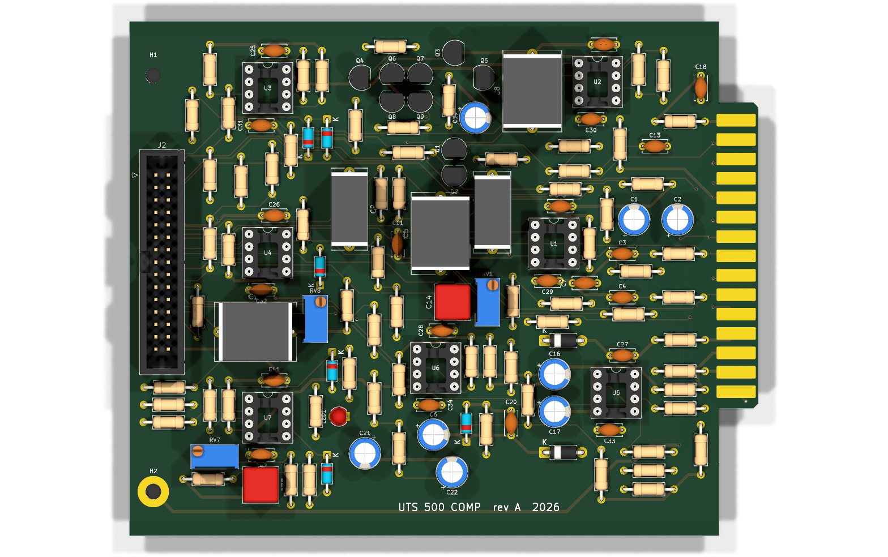
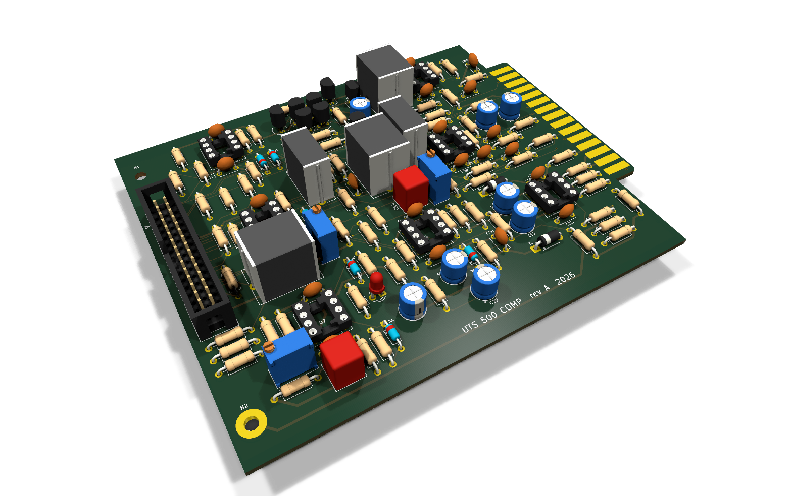
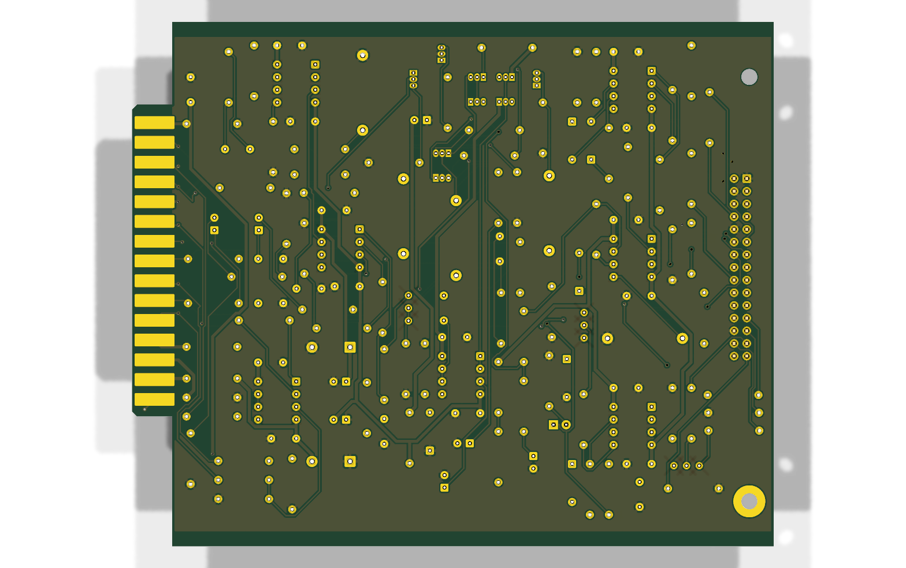
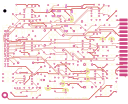
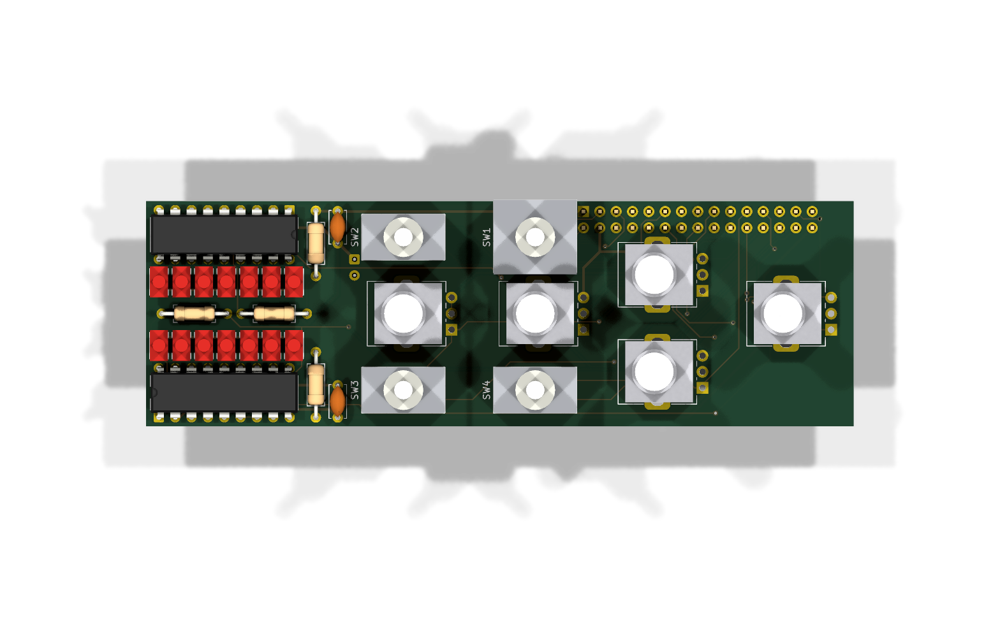
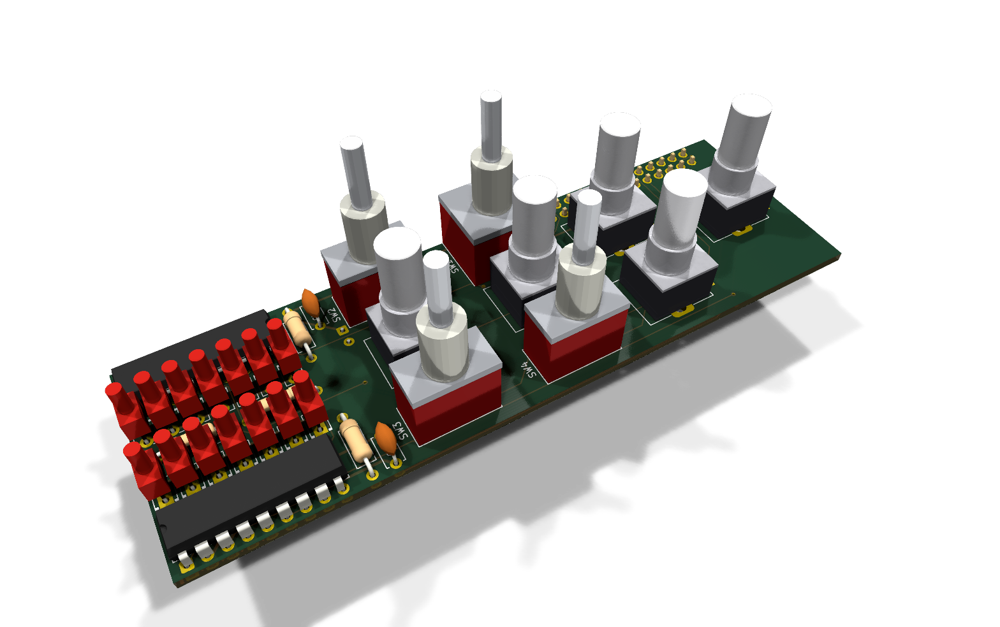
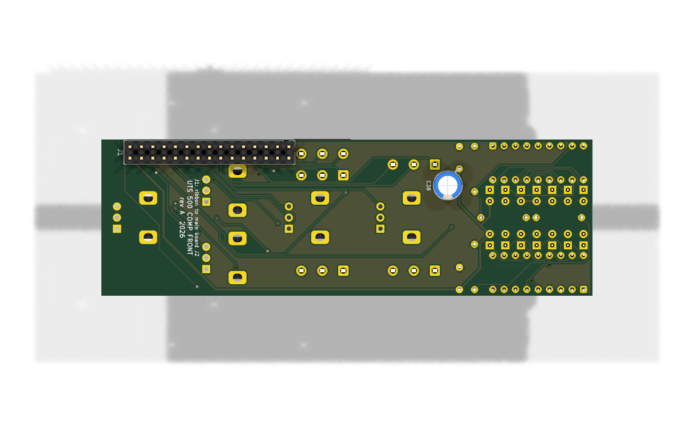
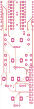

Practical — 14
Design files
The KiCad schematics and boards, exported straight from the repository so they can be read, printed or downloaded without KiCad.
Exported from Compressor at b6e6605
(2026-10-03) with KiCad 10.0.6. These are snapshots: the repository is the source, and
build/export_kicad.py regenerates this page when it changes.
Schematics
Single-sheet schematic the main board is drawn from
kicad_withpcb/compressor_with_pcb/compressor_with_pcb.kicad_sch. The PDF has every sheet;
download it.

Front board schematic: the panel controls, meters and ribbon header
kicad_withpcb/compressor_front/compressor_front.kicad_sch. The PDF has every sheet;
download it.

Hierarchical schematic, one sheet per section, that these pages document
kicad/UTS Mini Mixing Desk - Compressor.kicad_sch. The PDF has every sheet;
download it.
One SVG per sheet: 1-connector · 2-input · 3-vca · 4-output · 5-sidechain · 6-power · 7-meters · root sheet


Boards
Main board: the card that plugs into the rack
kicad_withpcb/compressor_with_pcb/compressor_with_pcb.kicad_pcb
| Count | |
|---|---|
| Footprints | 137 |
| Track segments | 1053 |
| Vias | 37 |
| Copper pours | 4 |




Every layer, one per page: main-board-layers.pdf.
Front board: sits behind the faceplate, joined to the main board by a ribbon
kicad_withpcb/compressor_front/compressor_front.kicad_pcb
| Count | |
|---|---|
| Footprints | 33 |
| Track segments | 373 |
| Vias | 19 |
| Copper pours | 1 |




Every layer, one per page: front-board-layers.pdf.